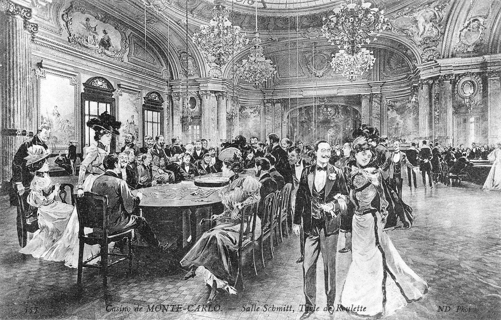
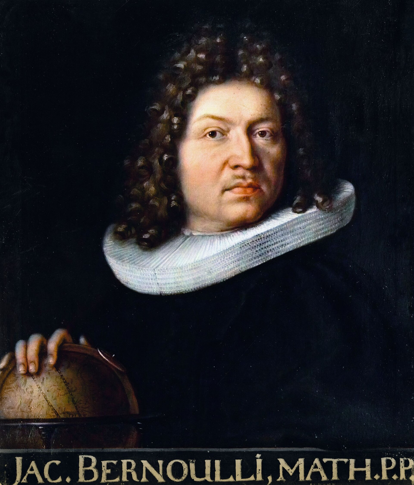
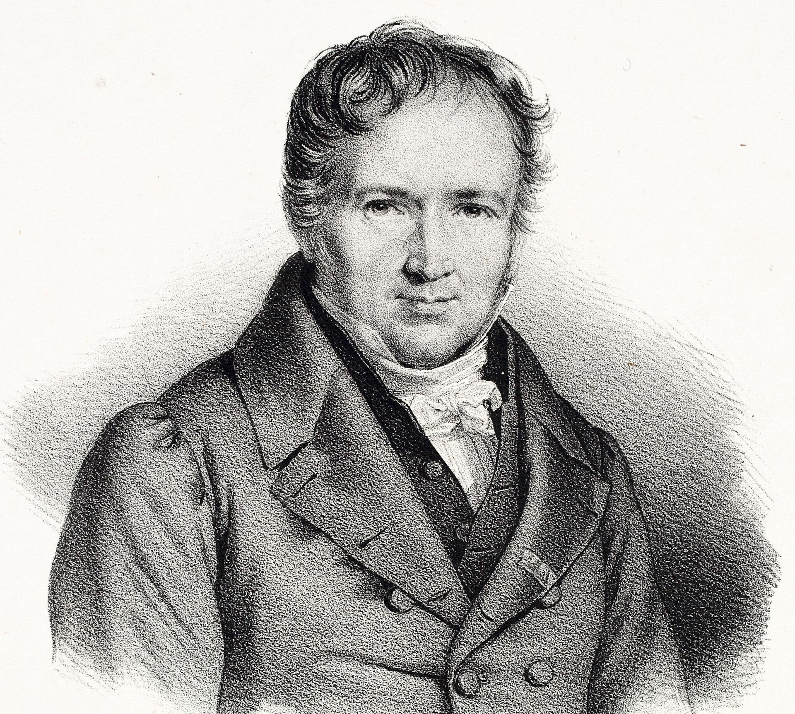

Every night someone leaves Monte Carlo richer, yet the casino rarely has a losing year. One theorem explains both.

Flip a coin, a lot
Flip a fair coin ten times and seven or more heads is unremarkable: it happens about one time in six. Flip it ten thousand times and seven thousand heads would be astonishing. The coin didn't change. Only the number of flips did.
Here is how it settles. Say you're unlucky and get 7 heads in the first 10. The coin has no memory, so the next 990 flips give about half heads, roughly 495.
| Flips | Heads | Average |
|---|---|---|
| First 10 | 7 | 0.700 |
| Next 990 | about 495 | 0.500 |
| All 1,000 | about 502 | 0.502 |
The two extra heads are never cancelled. They are diluted. That is the whole trick, and it's why "tails is due" is wrong: the average settles by burying early luck under new data, not by correcting it.
Try it. Raise the flips and watch five independent runs squeeze into the shaded band, which narrows like 1/√n. Then switch to Cauchy samples, a distribution with no average at all, and watch the law give up.
Press flip to start.
What it actually says
Take independent samples X₁, X₂, …, Xₙ from the same distribution, whose true mean is μ. Their average gets as close to μ as you like, once n is large enough.
X̄ₙ = (X₁ + X₂ + ⋯ + Xₙ) / n → μ as n → ∞
It comes in two strengths. The weak law: for any margin ε, the chance that the average misses μ by more than ε shrinks to zero. The strong law: with probability one, the sequence of averages actually converges to μ and stays there.
The weak law, in four lines
- Each sample has variance σ². Independent variances add, so the sum has variance nσ².
- Dividing the sum by n divides its variance by n², so Var(X̄ₙ) = σ²/n.
- Chebyshev's inequality: P(|X̄ₙ − μ| ≥ ε) ≤ Var(X̄ₙ)/ε² = σ²/(nε²).
- The right side goes to 0 as n grows. That is the weak law.
Notice what the proof leaned on: independence in line 1 and a finite σ² in line 3. Remove either and the guarantee goes with it. Sharper versions can drop the finite variance, but never the finite mean.

Where it came from
Ars Conjectandi is published in Basel, eight years after Jacob Bernoulli's death. It holds the first proof that observed frequencies converge to the true probability: the bridge from "I saw heads 60% of the time" to "the chance of heads is 60%".
How long Bernoulli said he worked on it. He called it his golden theorem.

Siméon Denis Poisson names it la loi des grands nombres. The name sticks.
Precision is expensive
The typical error of an average is σ/√n, where σ is the spread of a single sample (0.5 for a coin). The square root is the price tag: to halve the error you need four times the data, and every extra decimal place costs a hundred times more.
So how large is large? Large enough that σ/√n is smaller than the error you can live with. Each pixel below is one flip, phosphor for heads.
100 flips
Typically within 5 points of 50%.
10,000 flips
Typically within half a point.
1,000,000 flips
Typically within 0.05 points. A hundred times the flips of the middle tile, for one more decimal.
Read the small print
Averaging removes noise. It never removes bias. Most real failures of the law are failures of its assumptions.
What it promises
- A biased coin is fine→ 0.600
Fairness isn't required. A coin that lands heads 60% of the time averages to 0.6. The law finds whatever the true mean is.
- One outlier washes outdiluted
A single wild value is just one vote in a growing crowd. Given enough data, it is diluted exactly like the early heads.
- No memory neededno debts
Past flips owe you nothing. Believing a streak must "balance out" is the gambler's fallacy.
Where it breaks
- Heavy tailsnever settles
If extreme values keep coming often enough, no true average exists. The Cauchy distribution is the classic case; wealth, city sizes and viral posts are its real-world cousins.
- Dependent samplesoverconfident
A million readings from one stuck sensor are one reading, a million times. Correlated data carries far less information than its count suggests.
- Biased samplingwrong answer
Poll only your friends and a million answers converge, confidently, to your friends' opinion.
- Distribution shiftstale answer
Train a model on 2020 and deploy it in 2026. The law held, for a world that no longer exists.
Where it runs today
Where it runs today
Training a model is the same bet: we can't measure its error on every possible input, so we minimise the average error on samples and trust the law that the two are close. That is empirical risk minimisation, and it works only while the samples look like the world.
Look at how they miss
Each experiment below is 100 coin flips. Each pixel is one experiment's final average, dropped into its column. The averages arrive near 0.5, as promised. Now watch the misses pile up.
Coins, darts, gradients, roulette: average anything and the misses stack into this same shape.
Why that shape, every time? That's the next issue.